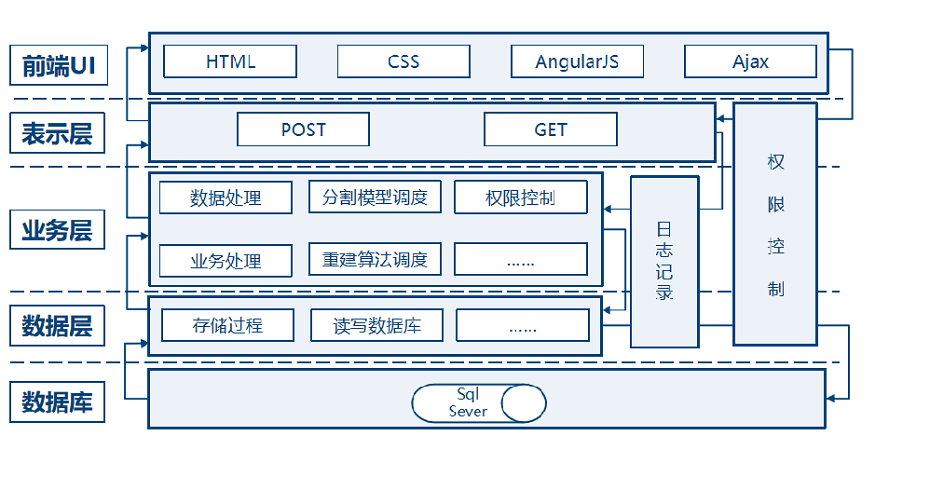
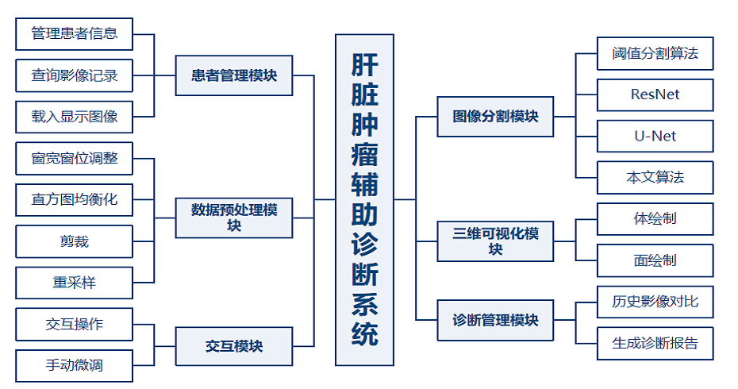
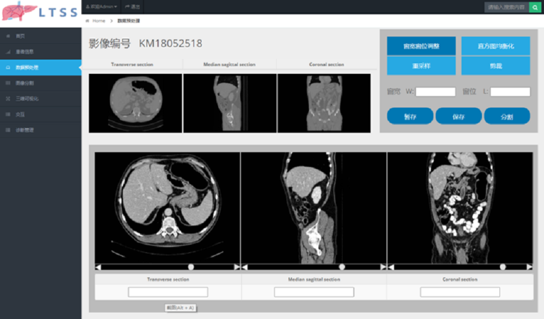
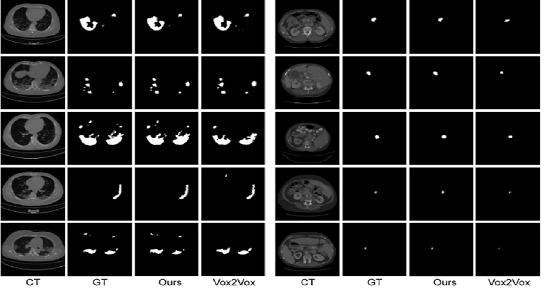

肝脏肿瘤CT图像分割方法研究
项目介绍
问题：近年来，全球肝癌发病率和死亡率持续上升，及时发现肝脏病变并进行有效治疗对减少肝癌死亡率至关重要。计算机技术和生物医学不断发展，医学成像设备逐渐普及，医学图像分割在疾病诊断、病例分析、手术规划、预后评估中都有所应用，不仅可以为医生提供器官发生病变的位置、病变区域大小、病灶严重程度等极具价值的信息，而且可以在外科手术过程的实时成像中发挥作用。目前，如何实现肝脏肿瘤高精度自动分割，仍然是医学图像处理中最具挑战性的任务之一。由于人工成本和专业知识限制，很难在一个大型的肝脏图像数据集中，在体素水平上对肝脏及肝脏肿瘤进行标注，对以数据为驱动的深度学习模型来说，带标签数据缺乏这个问题需要解决。其次,肝脏CT图像自身具有灰度分布不均匀、形态数目因人而异、边界模糊的特点，使肝脏肿瘤精细化分割难度进一步加大。
方案：提出了一个新型2D肝脏肿瘤分割方法，同时关注肿瘤图像语义信息和边缘信息。解决了肝脏肿瘤边缘模糊问题和个体之间差异大的问题，实现了肝脏肿瘤的精细化分割。
提出了一个新型三维分割网络S-PPM V-Net。空间形状感知模块和改进的空间金字塔池化模块，准确有效地捕捉目标区域之间的空间形状特征，能够有效分割出目标区域。
提出了一个由粗到细的分割框架，屏蔽无关脏器的干扰，提高肿瘤分割精确度，有效解决带标签医学图像 获取难度大的问题。基于ITK和VTK可视化工具设计并实现了一款可视化分割系统用于辅助医疗诊断，包含患者信息管理、数据预处理、图像分割、三维可视化、交互和诊断管理六大功能模块。
项目架构


效果展示


项目视频